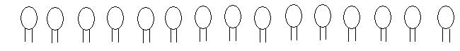

Explore and Discover!
Explore and Discover!
Read the problems below:
Problem 1
The average of 6 numbers is 66. If 75 and 89 are added to the 6 numbers, what is the new average?
Problem 2
Ben has some goats and chickens in his backyard. All in all there are 15 heads and 46 legs. How many goats and chickens are there?
You can solve the problem using the steps:
Problem 1
• Understand
Know what is asked: The new average
Know the given facts: 6 numbers; the average of 6 numbers is 66; 75 and 89 are new numbers to be added
• Plan
Determine the operation to be used: Multiplication, Addition and Division
Know the hidden questions: What is the sum of 6 numbers with an average of 66? What is the new sum if you add 75 and 89 to it? How many addends are there now?
Write the number sentence: [(66 x 6) + (75 + 89) ÷ (6+2)] = N
• Solve
Show your solution:
[(66 x 6) + (75 + 89) ÷ (6+2)] = N
[396 + 164] ÷ 8 = N
560 ÷ 8 = N
70 = N
So, the new average is 70.
• Check and Look back
Did I do the operations correctly? Is my answer reasonable? Did I write my answer in a complete sentence?
Answer: There are 40 baskets that are not full.
Problem 2
• Understand
Know what is asked: The number of goats and chickens
Know the given facts: 15 heads, 46 legs
• Plan
Make a diagram or drawing.
Draw 15 heads first.
Draw 2 legs in each head.
15 x 2 = 30 legs. Subtract 30 legs from the given 46 legs.
• Solve
46 – 30 = 16 legs left. Divide 16 by 2. 16 ÷ 2 = 8.
So, we add 2 legs to 8 more heads.
So, there are 9 goats and 7 chickens.
• Look back:
To check, 8 goats and 7 chickens give 15 heads of animals.
8 goats x 4 legs = 32 legs
7 chickens x 2 legs = 14 legs
32 + 14 = 46 legs
Answer: There are 8 goats and 7 chickens in Ben’s backyard.
Can you try solving the following problems?
- I am thinking of a number. Thrice my number minus 6 equals 66. What is my number?
- Five mangoes and one apple cost Php75. One Mango and 5 Apples cost Php111. How much does each mango cost?
Solve the following problems.
- The sum of three numbers is 264. One of the numbers is 84. What is the average of the two numbers?
- Larry collected 175 eggs from one poultry house and 215 eggs from a second poultry house. If Larry put 12 eggs to a carton, how many cartons did he fill?
- A farmer bought 85 kg of fertilizer in 12 bags. Some are 5-kg bags. The rest are 10-kg bags. How many 5-kg bags did he buy?
Try some more problems!
Read and analyze the following problems. Solve them in any method you like.
- Kim’s rectangular garden is 24m long and 18m wide. If his fence needs posts that are 2m apart, how many posts does he need?
- The average of five consecutive odd numbers is 59. What are the five odd numbers?
- How many squares are there on an 8-by-8 checkerboard?
- I am thinking of a number. Twice the number plus 8 equals 52. What is my number?
- In a car park, there are motorcycles, 4-wheeled cars and 6-wheeled trucks. There are 20 cars and 15 trucks. If there are 250 wheels altogether, how many motorcycles are there in the park?